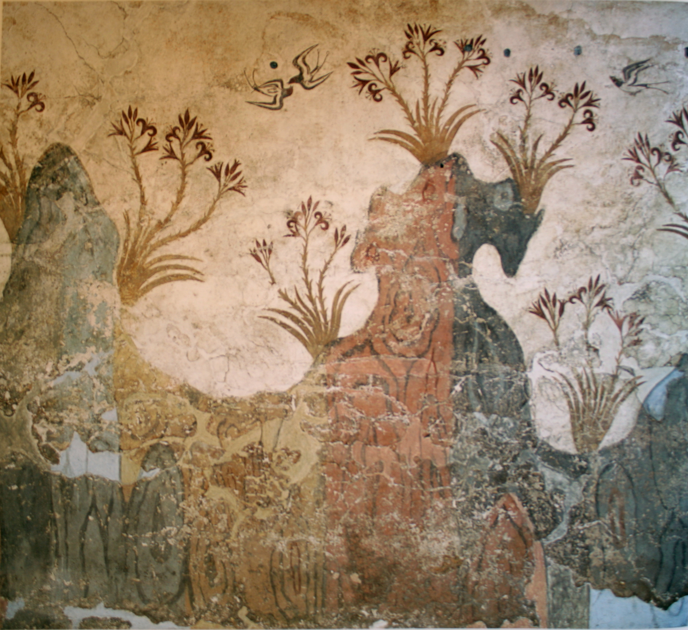
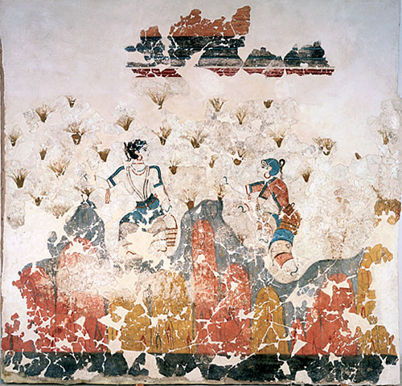

Early settlement on Santorini.
Santorini's earliest inhabitants establish settlements and develop rudimentary societies, laying the groundwork for future civilizations.
Catastrophic eruption of the volcano on Santorini.
The eruption devastates the island and contributes to the decline of the Minoan civilization, leading to significant changes in Santorini's landscape and society.
Santorini under Greek and Roman influence.
Santorini's earliest inhabitants establish settlements and develop rudimentary societies, laying the groundwork for future civilizations.
Santorini becomes part of the Byzantine Empire
Santorini thrives as part of the Byzantine Empire, serving as a strategic outpost in the Eastern Mediterranean and adopting Byzantine culture and Christianity.
Santorini under Venetian control.
The Venetian Republic establishes control over Santorini, influencing the island's architecture, economy, and culture.
Santorini falls under Ottoman rule.
Santorini becomes part of the Ottoman Empire, experiencing changes in governance, trade, and societal structure under Ottoman administration.
Flourishing of the Minoan civilization on Santorini.
Santorini's earliest inhabitants establish settlements and develop rudimentary societies, laying the groundwork for future civilizations.
Flourishing of the Minoan civilization on Santorini.
Santorini's earliest inhabitants establish settlements and develop rudimentary societies, laying the groundwork for future civilizations.
Flourishing of the Minoan civilization on Santorini.
Santorini's earliest inhabitants establish settlements and develop rudimentary societies, laying the groundwork for future civilizations.
Flourishing of the Minoan civilization on Santorini.
Santorini's earliest inhabitants establish settlements and develop rudimentary societies, laying the groundwork for future civilizations.
Prehistoric Era (Prehistoric Times - 1600 BC)
Minoan Civilization (circa 3000 BC - 1450 BC)
Volcanic Eruption and Decline of Minoan Civilization (circa 1600 BC)
Hellenistic and Roman Periods (323 BC - 330 AD)
Byzantine Era (330 AD - 1453 AD)
Venetian Rule (13th century - 16th century)
Greek War of Independence (1821 - 1830)
Greek War of Independence (1821 - 1830)
Modernization and Tourism (19th century - 20th century)
Modern Era (1821 AD - Present)

